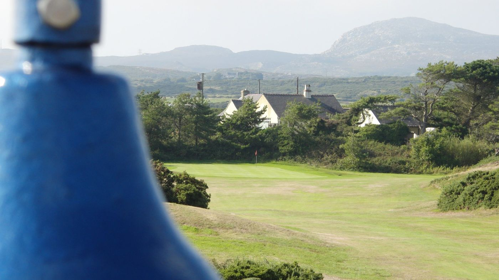

The Club
Through the years
Holyhead was booming at the start of the 20th century. The mail to Ireland ran through the port, and Trearddur Bay became a summer retreat for prominent families.
A brochure mentions the Tre-Arddur Golf Club, run from the Tre-Arddur Bay Hotel, "which is on the links".
Admiral Burr presents a cup for the Trearddur Bay links. In December, a meeting at the Station Hotel sets out to build a proper 18-hole course.
The London and North Western Railway brings in James Braid, who had designed their Scottish courses. Commander G E Holland becomes the first Secretary.
The course opens with 14 holes. Admiral J Leslie Burr, the first Captain, drives the first ball, by one account only a few yards.
Braid's full eighteen holes are finished. Not much has changed since.
A member of the Association of James Braid Courses, ranked fourth in North Wales by NCG.
Club officials 2026

Example layout: the club’s officials and their photos go here.
A welcome from the Captain
The Captain’s welcome for the year goes here, in their own words: a few lines about the club, the year’s chosen charity, and an invitation to visitors and new members.
Example layout.
Club diary
November 2026